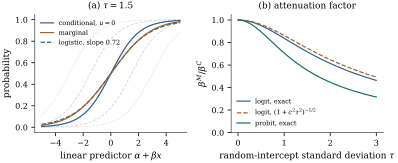

40.1 Marginal versus conditional models
A clinician asks what a treatment would do to this patient’s odds of recovery; a health minister asks what it would do to the recovery rate of the whole population. In a linear model the two questions have the same answer, because averaging a straight line over patients returns the same straight line. As soon as the link is nonlinear they do not, and no amount of data removes the difference: it is a property of the model, not of the sample. This section sets up the two targets and proves that the population-averaged coefficient of a logistic model is strictly smaller in magnitude than the individual one.
40.1.1. Two coefficients, one model
Throughout this chapter the data are
clustered: units
with
The other target concerns the response averaged over
clusters. Write
for the marginal mean function: the
mean response at
the expectation being over the covariate
distribution, and assumed to have a unique solution —
which it does whenever
Warning. Neither coefficient is “the” right one and neither is an approximation to the other. They are answers to different questions, and a paper that reports one while discussing the other has made a substantive error, not a numerical one.
40.1.2. The attenuation inequality
Let
(a) Identity link. If
(b) Log link. If
(c) Probit link. If
so the marginal mean function is again a probit, with
(d) Logit link. Let
Consequently, if
Proof.
(a)
(b)
(c) Let
(d) Write
Part (d) needs no normality of
Idea. A nonlinear link and a random
effect do not commute. Averaging
40.1.3. How large is the difference?
The probit factor in Eq. 40.1.4 is exact; the
logit has no closed form, but the two links are so
nearly proportional that a good approximation comes from
pretending it does. Matching a standard logistic
distribution to a normal one scaled by
due to Zeger, Liang and Albert (1988). It is an approximation, not a theorem.
Take

import numpy as np
from numpy.polynomial.hermite_e import hermegauss
from scipy.optimize import root
from scipy.stats import norm
def expit(z):
return 1.0 / (1.0 + np.exp(-z))
# nodes and weights that integrate g(U) over U ~ N(0, 1): sum_k w_k g(z_k)
z_node, z_w = hermegauss(80)
z_w = z_w / np.sqrt(2 * np.pi)
def marginal_curve(eta, tau, link="logit"):
"""E[H(eta + U)] for U ~ N(0, tau^2), by Gauss-Hermite quadrature."""
H = expit if link == "logit" else norm.cdf
grid = np.atleast_1d(eta)[..., None] + tau * z_node
return np.sum(z_w * H(grid), axis=-1)
def beta_marginal(alpha, beta, tau, link="logit"):
"""Population-averaged coefficients: the root of E[(1, x){m(x) - H(a + b x)}] = 0
when x ~ N(0, 1), with m the marginal curve of the conditional model."""
H = expit if link == "logit" else norm.cdf
m = marginal_curve(alpha + beta * z_node, tau, link)
def score(par):
resid = m - H(par[0] + par[1] * z_node)
return [np.sum(z_w * resid), np.sum(z_w * z_node * resid)]
sol = root(score, [alpha, beta], tol=1e-13)
return sol.x
C_LOGIT = 16 * np.sqrt(3) / (15 * np.pi)
def approx_factor(tau, link="logit"):
c = C_LOGIT if link == "logit" else 1.0
return 1.0 / np.sqrt(1.0 + c**2 * tau**2)
for t in [0.5, 1.0, 2.0]:
print(f"tau = {t}: logit {beta_marginal(0.0, 1.0, t)[1]:.4f}"
f" approximation {approx_factor(t):.4f}"
f" probit {1 / np.sqrt(1 + t**2):.4f}")40.1.4. Attenuation is not bias
Attenuation is not bias: both coefficients are
correct answers to different questions. The phenomenon
is the non-collapsibility of the odds
ratio, met in Section
35.5 as Example (The odds ratio does not collapse)
— averaging
It follows that the conditional coefficient depends
on what else is in the model: adding a covariate that
explains part of the cluster heterogeneity lowers
Which target, then? The conditional coefficient
answers questions about a change within a unit
— a dose for a patient, a policy for a school — and is
comparable across studies with different amounts of
unmeasured heterogeneity, provided the random-effect
distribution is right. The marginal coefficient answers
questions about a population total or rate, and is safer
when the cluster structure is a nuisance, because it
assumes nothing about the cluster effects. For the
identity link the distinction disappears, which is why
Chapter
32 never raised it: in Definition 32.2.1
the marginal model Eq. 32.2.2 has
the same
40.1.5. Exercises
A. Check your understanding
A random-intercept logistic model for whether a pupil
passes an examination has
Solution. The factor is
A Poisson random-intercept model with a log link is
fitted and reports
B. Practice
Use Eq. 40.1.5 to show that
in a logistic random-intercept model with
Solution. By symmetry
Extend Proposition 40.1.1(c) to
a probit model with a random slope:
Solution. Exactly as in the proof
of (c), with
C. Going deeper
Eq. 40.1.6 is an
approximation built for a normal random effect. This
exercise computes the attenuation exactly for a
two-point one and shows how different the answer can be.
Take a binary covariate and the model
(a) Show that
(b) Show that
(c) Check that
(d) Show that
Solution.
(a)
(b) Write
(c) At
(d) As
With a random slope the marginal coefficient
need not even share the sign of the conditional one.
Extend Exercise (B2) to the
logit: let
(a) Show that the two clusters have conditional log odds ratios
(b) Show that
(c) Show that the marginal risk difference is
(d) Explain why Proposition 40.1.1(d) does not apply, and why “attenuation” is the wrong word for what has happened.
Solution.
(a) Within a cluster,
(b) At
(c)
(d) Part (d) of the proposition concerns